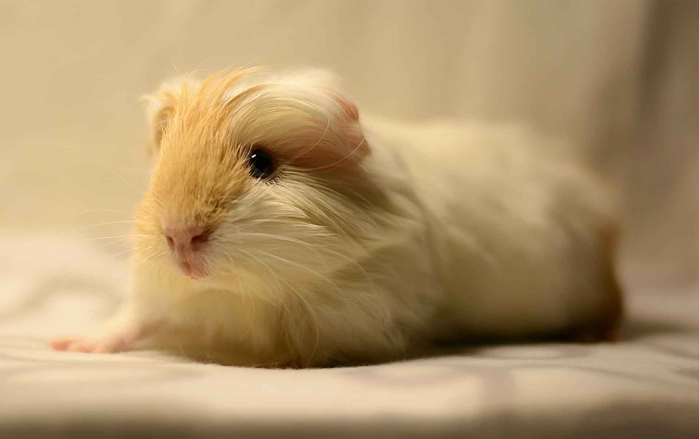
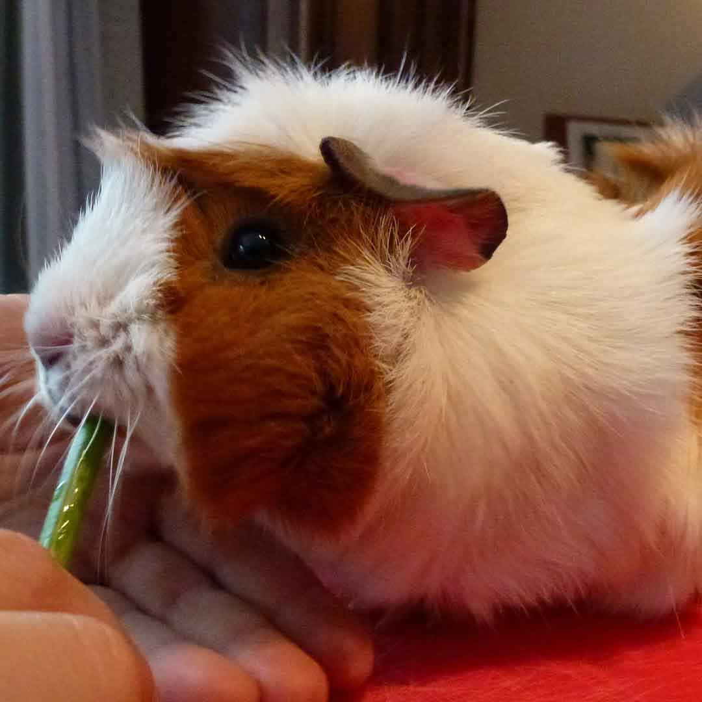
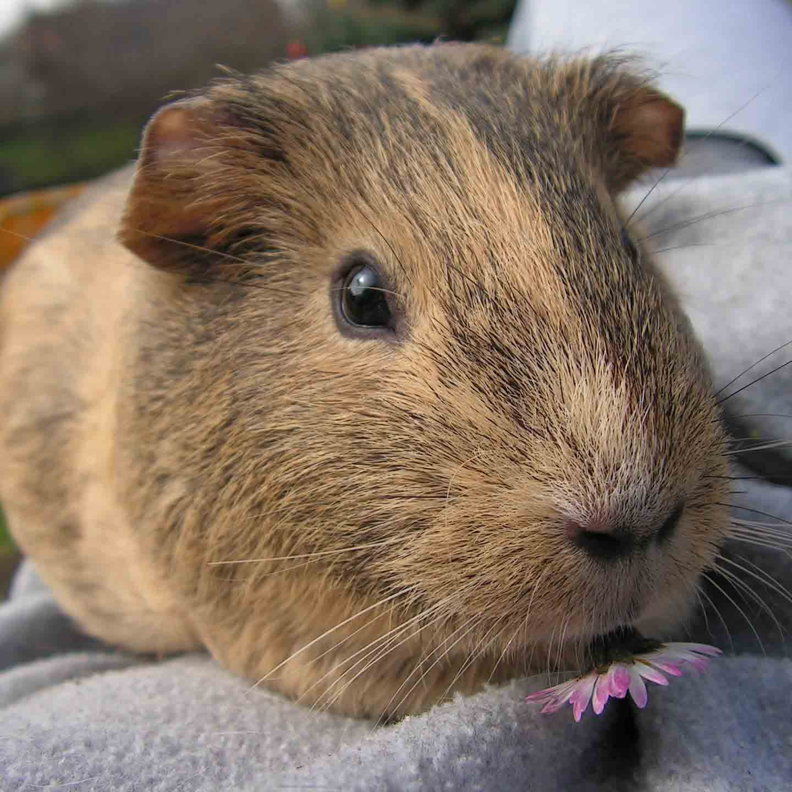

Our Piggies

Wilma
Wilma is our sassy little guinea.She in the Princess of the herd.She loves snuggles and Carrots.

David
David is our little old man.He loves to judge you with his loving gaze.He is a little loud when eating Hay.He will eat Hay over Veggies any day.You know the simplest of things pleases him.

Freida
Freida is our new little Girl.We don't know much about her yet but she sure is CUTE!!